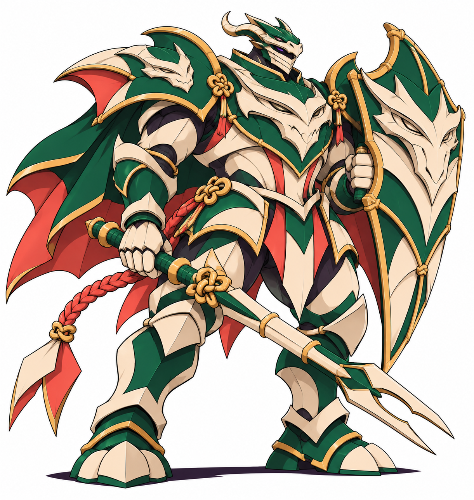
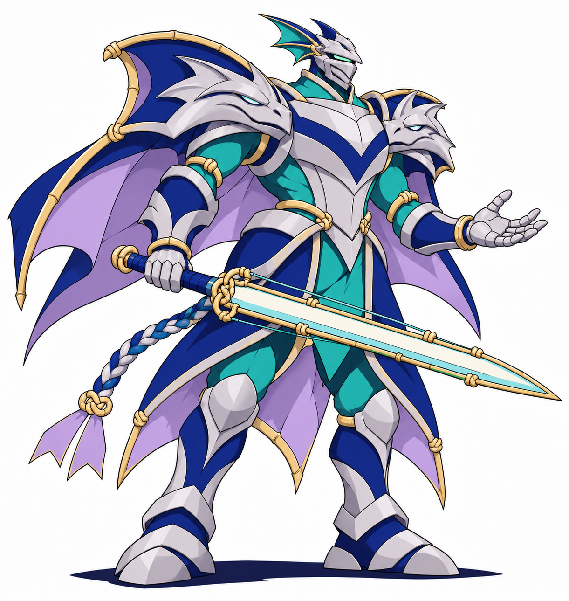
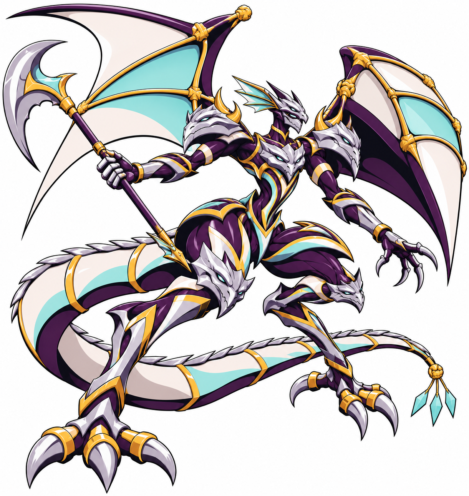
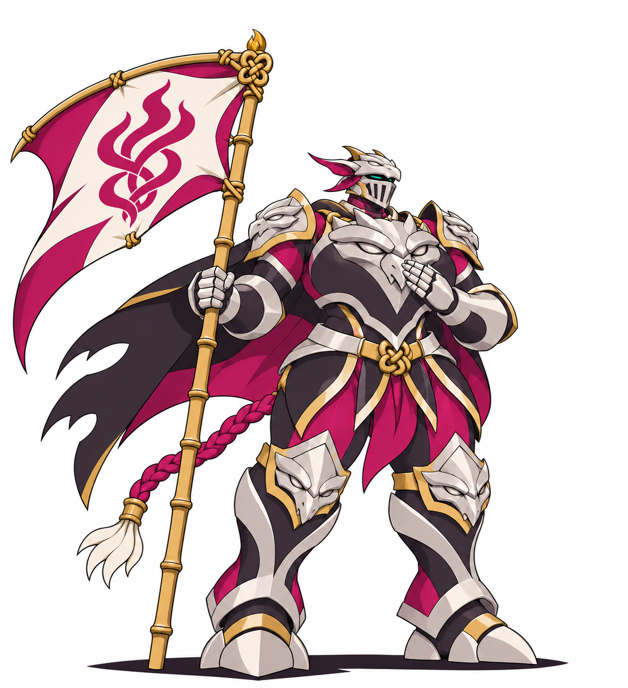
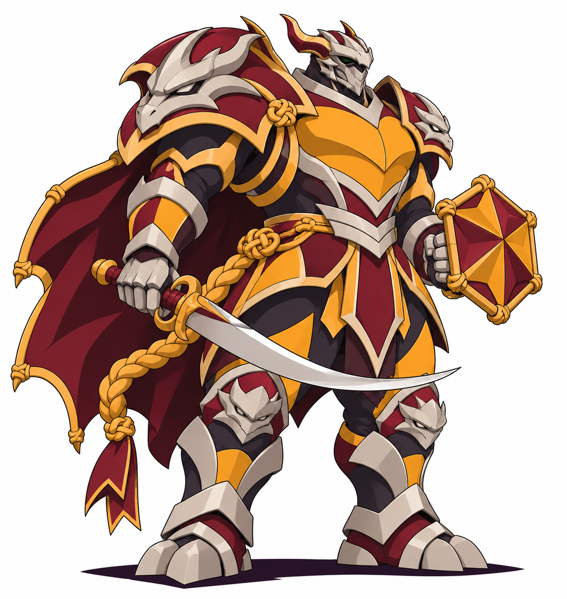
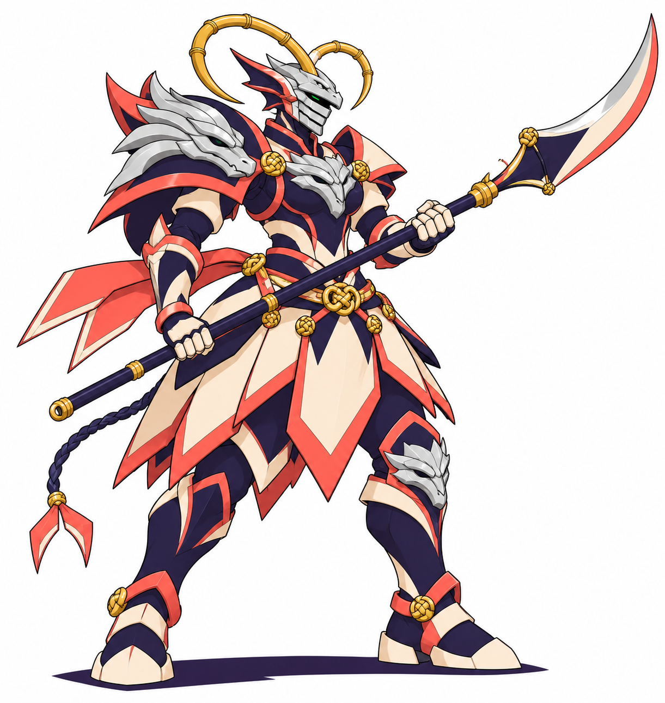
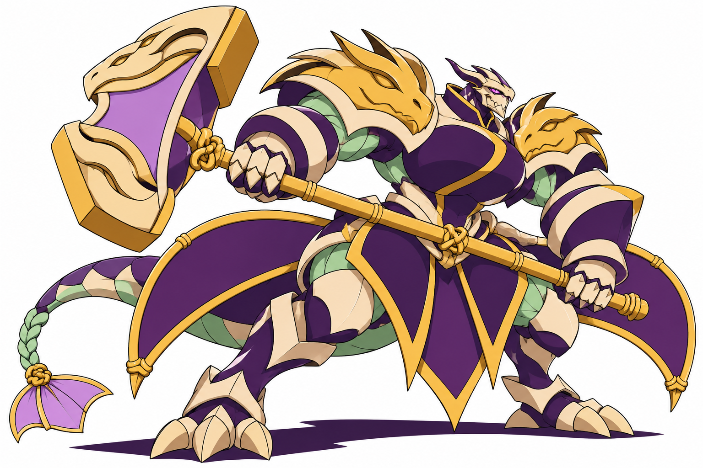
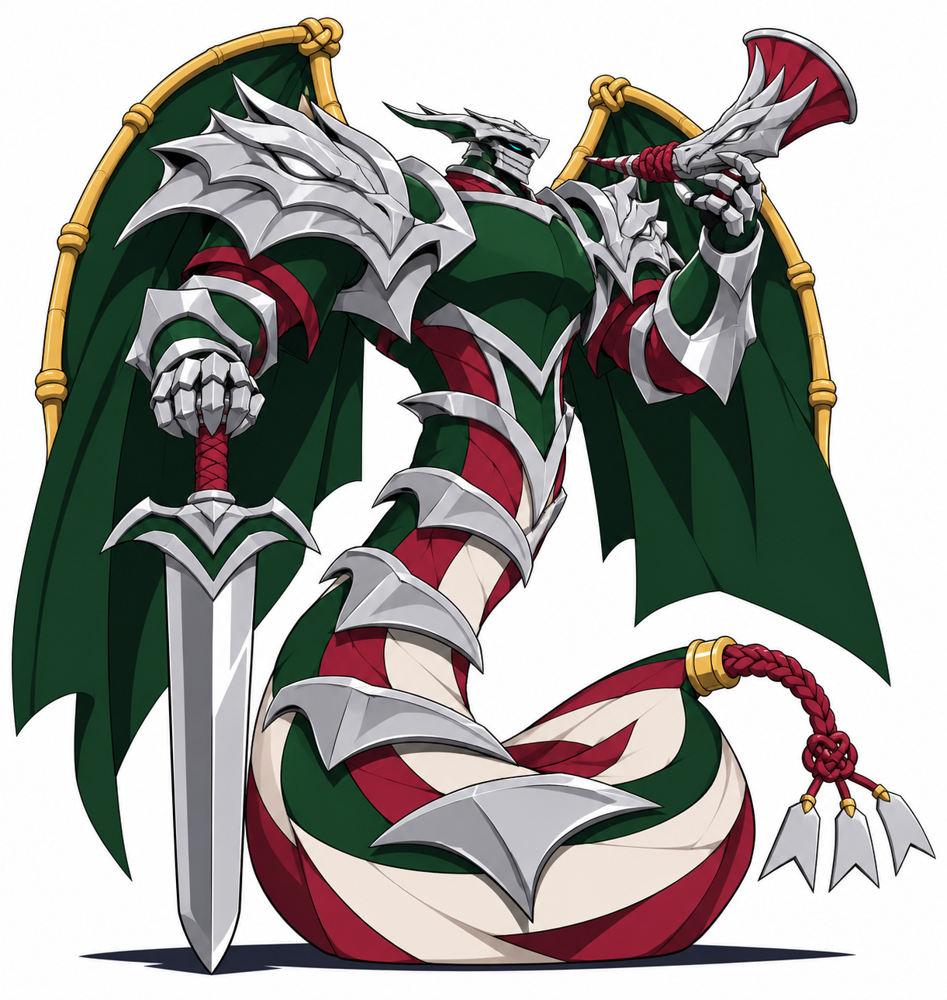

Oito adultos propostos: quatro cavaleiros e quatro cavaleiras. Helmet com crânio dracônico sobre viseira fechada, faces metalizadas em placas e construção de pipa viva. Figuras históricas, tradição semihistórica, mito e literatura são distinguidos na pesquisa.
Valdrisa v2, Bradamara e Rolandor exploram novas anatomias e grandes contrastes de volume. As cinco formas mais convencionais ficam como comparação, não como revisões radicais.

Geordraco
São Jorge · Lança de contenção e escudo-viseira
Recusa provar coragem matando o que foi ferido. Sua lança prende linhas hostis e o escudo abre uma saída; se insistir em perseguir, abandona quem protegia.
Brief · Conferência

Lacustrel
Lancelot · Espada-linha de duas margens
Carrega dois juramentos incompatíveis e precisa escolher a quem proteger. Sua espada abre um corredor entre linhas cruzadas, mas não permite defender as duas margens sozinho.
Brief · Conferência

Valdrisa
Valquíria · Alabarda de resgate
Escolhe voltar por quem perdeu a própria linha. As velas dorsais sustentam uma retirada breve, mas não carregam toda a formação de uma vez.
Brief · Conferência

Joanacendra
Joana d’Arc · Estandarte de brasa
Não escuta ordens do destino: reconhece as linhas de parceiros dispersos e ergue um estandarte para reuni-los. Sua força exige permanecer visível, expondo sua posição.
Brief · Conferência

Cidraco
El Cid · Sabre e escudo de passagem
A fama o precede, mas ele protege viajantes que não reconhecem seu brasão. Aprende a abandonar a vitória espetacular para manter uma travessia segura.
Brief · Conferência

Tomoeryu
Tomoe Gozen · Naginata de corrente
Defende a retaguarda com curvas de linha em vez de golpes frontais. A lâmina desvia uma carga por vez; tentar deter todas rompe sua postura.
Brief · Conferência

Bradamara
Bradamante · Marreta de rompe-encantos
Quebra os fechos que aprisionam outras almáticas. Seu golpe só deve atingir a amarra: força sem precisão machuca o corpo que pretende libertar.
Brief · Conferência

Rolandor
Roland · Montante e olifante de alerta
Seu erro antigo foi chamar ajuda tarde demais. Agora prefere soar o alerta antes de exibir coragem, e sustenta a linha até o último aliado atravessar.
Brief · Conferência
Concepts com fundo branco; sem grade técnica de pixel art, rig, animação ou integração. Nomes e lore propostos.